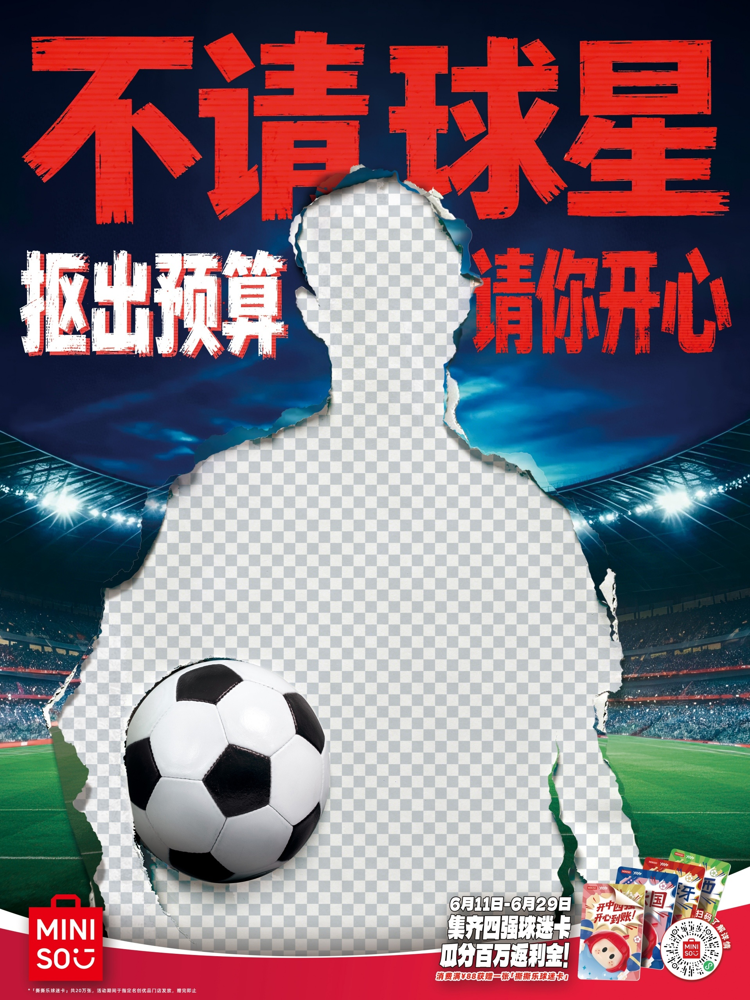
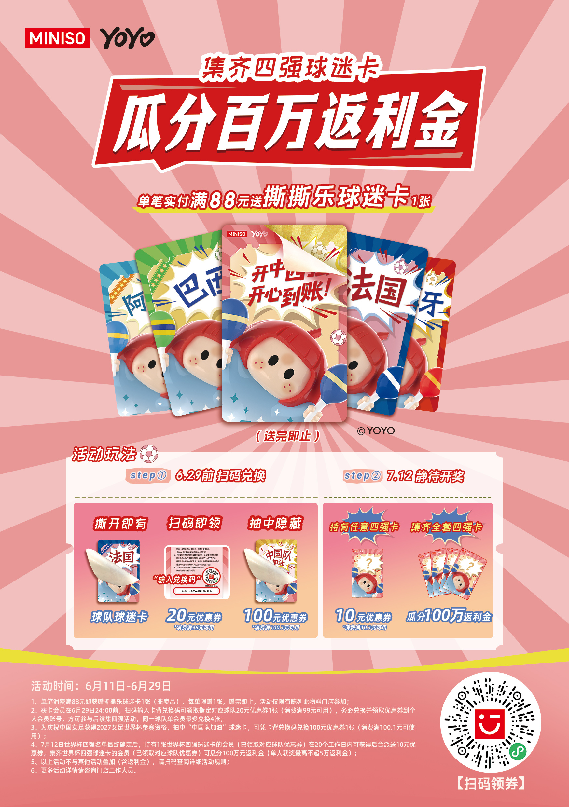
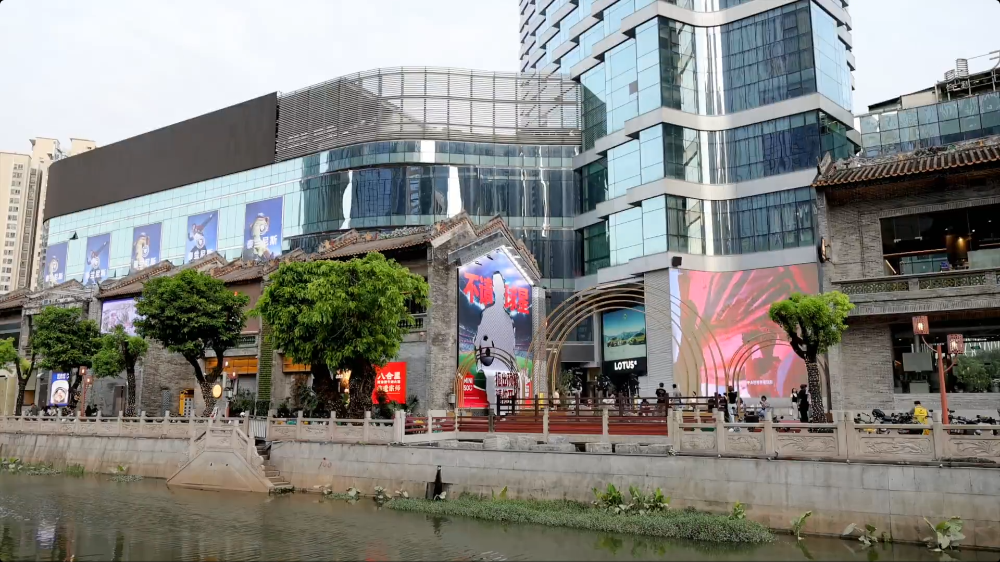
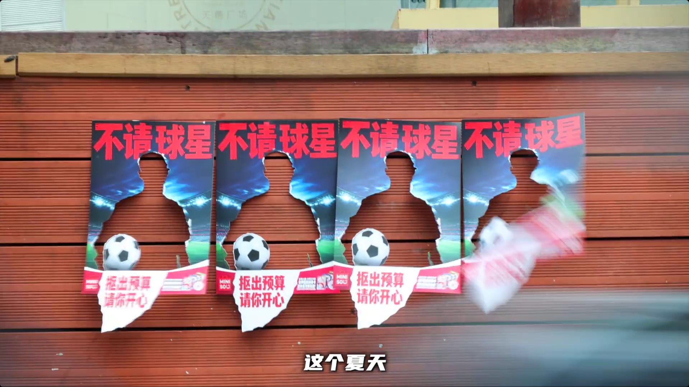
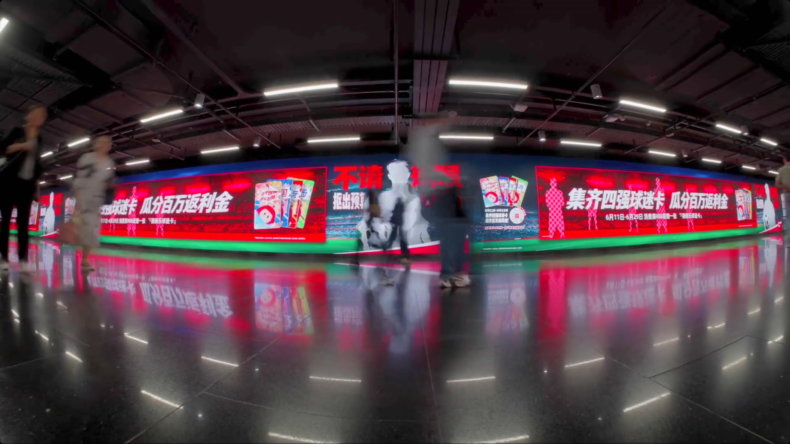
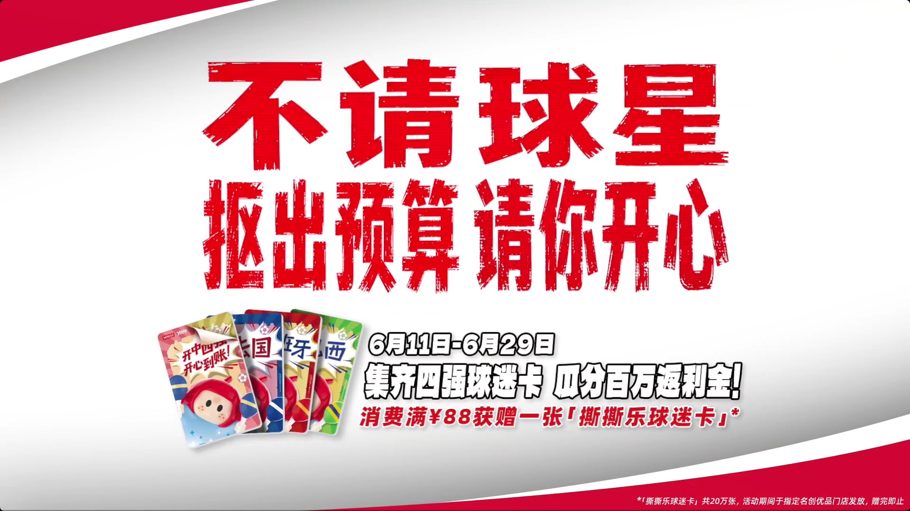

案例发生了什么



名创优品没有购买球星或球队权益，而是把“没有球星”直接做成广告主体：城市大屏里只留下被抠走的人形、透明棋盘格和足球，再用“不请球星，抠出预算请你开心”解释这场故意制造的“投放事故”。真正让反营销成立的不是自嘲，而是品牌在 6 月 10 日同步公布了兑现机制：6 月 11—29 日在指定门店单笔消费满 88 元，获赠一张撕撕乐球迷卡；扫码可领相应优惠，世界杯四强确定后，持对应球队卡继续领券，集齐四强卡的用户共同瓜分 100 万元返利金。
案例启示
案例启示
关键动作
- 用被撕掉的人形和透明棋盘格制造“球星本该在这里”的视觉缺席，让限制本身比常规球星海报更醒目。
- 把“不请球星”从预算不足改写成品牌选择，并以“抠出预算请你开心”连接名创优品长期的平价与快乐心智。
- 通过杭州工联 CC、广州天德广场、上海陆家嘴换乘通道等不同尺度户外制造城市事件，再由路人拍摄和话题讨论完成二次传播。
传播与商业机制
传播路径
以“非官方借势 / 反营销户外 / 门店返利”为资源起点，进入城市户外大屏、路人用户共创内容、指定门店、撕撕乐球迷卡、扫码领券与返利，让赛事权益转化为用户可接触、可讨论或可参与的内容。
商业承接
不把曝光直接等同销售，重点观察户外触达、自然讨论、赠卡量、扫码领券、到店订单、返利履约与复购，并区分品牌自报、平台数据与可独立核验结果。
可复用的方法反营销不是简单宣布“我没钱”或反对明星，而是把品牌没有购买的昂贵资源变成一个消费者看得见、算得清、能够参与并最终核验的利益；如果没有后端兑现，前端的坦诚只是一句姿态。
适用条件、风险与证据
- 先明确目标是国内动销、出海认知、渠道关系还是授权商品，而不是全部都做。
- 球星或球队的赛果只是放大器，必须准备常态内容和转化出口。
- 对授权范围、地域、肖像和商品库存建立可追溯台账。
核验记录可将已核动作作为内部判断基础；涉及投放规模、销售结果或合作细则时，仍应以品牌、平台或权利方的一手发布为准。 当前记录：已核（名创优品官方微博 + 项目方复盘 + 户外现场留存）；素材状态：已归档 9 张官方规则、城市户外、地铁长屏与视频首帧。
品牌与权威来源物料
这里只展示可追溯到品牌、权利方、官方账号或明确注明原始出处的真实物料；研究图卡不计入案例图片。






资料与来源
官方资料、结果数据与下一步
已验证事实
- 名创优品官方微博于 2026 年 6 月 10 日公布“不请球星，抠出预算请你开心”及活动规则；新浪留存页可确认账号主体、发布时间、两张官方长图和完整文案。
- 活动期为 6 月 11—29 日：指定门店单笔消费满 88 元赠撕撕乐球迷卡；扫码可兑换相应优惠，四强确定后持有对应球队卡可继续领券，集齐四强卡可参与瓜分 100 万元返利金。
- 新浪浙江官方微博于 6 月 12 日留存杭州工联 CC 大屏执行；数英项目页同时记录广州天德广场和多种大小户外的“抠图”执行。
- 制作方 FansAI 披露，动态球员画面先用 AI 生成，再逐帧移除球员并重建草坪、阴影与反射；项目适配杭州西湖天幕 170m×18m、上海陆家嘴 112 米换乘通道及多种商场大屏，10 天交付。该信息属于制作方自述。
- 本页新增 SocialBeta 案例页中的主海报、城市户外、街头撕洞海报、换乘通道长屏和规则收束画面，共形成 9 张可对照的真实物料。
可追溯的结果
- 数英项目复盘称上线后累计曝光 1.5 亿、小红书和抖音出现大量用户共创内容，并在世界杯开赛当天进入热搜；目前未取得平台后台、去重方法、热搜榜位与在榜时长，因此记录为项目方自报，不使用“瞬间引爆全网”作为已审计结论。
- 官方活动规则明确 100 万元返利金及参与门槛，但尚未公开赠卡数量、扫码率、四强卡集齐人数、实际返利人数与金额、活动期门店增量或复购。
- “抠出球星预算”是品牌叙事，目前没有证据证明一笔原计划用于球星签约的预算被逐项转入返利池；可以核验的是品牌确实设置了 100 万元返利机制。
原始来源
- 名创优品官方微博（新浪留存） · 2026-06-10不请球星，抠出预算请你开心：球迷卡与百万返利规则
- 名创优品官方微博（新浪留存） · 2026-06-11“抠”出来的球星预算，我们决定给大家瓜分
- 新浪浙江官方微博 · 2026-06-12杭州工联 CC 透明球员大屏执行
- MINISO / SAN’S 梵也项目复盘 · 2026-06名创优品：不请球星，抠出预算请你开心
- FansAI 制作复盘 · 2026-06-25FansAI × MINISO：抠掉球星之后，剩下的才是难题
- SocialBeta · 2026-06-13名创优品的世界杯广告全靠“抠”出来！
- 名创优品官方微博 · 2026-06SocialBeta 标注的案例原链接
来源链接优先指向品牌、权利方或持权媒体官方页面；品牌自述数据按原始定义记录，不视作独立审计结果。